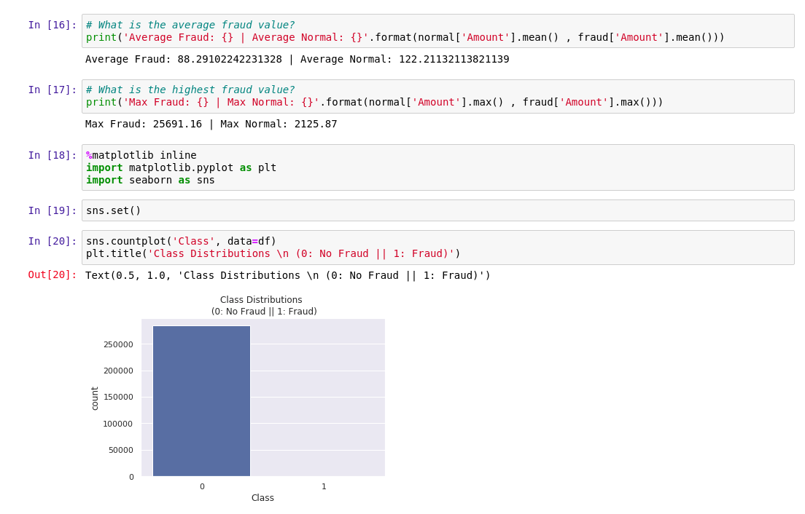

5 Exploring Data
Exploring Data
You will be using Jupyter notebooks from OpenDataHub to explore credit card fraud data, using tools such as dvc and Pandas.
About OpenDataHub
Open Data Hub is a blueprint for building an AI as a service platform on Red Hat’s Kubernetes-based OpenShift® Container Platform and Ceph Object Storage. It inherits from upstream efforts such as Kafka/Strimzi and Kubeflow, and is the foundation for Red Hat’s internal data science and AI platform. Data scientists can create models using Jupyter notebooks, and select from popular tools such as TensorFlow™, scikit-learn, Apache Spark™ and more for developing models. Teams can spend more time solving critical business needs and less on installing and maintaining infrastructure with the Open Data Hub.
About JupyterHub
JupyterHub from ODH allows OpenShift users to access Jupyter notebooks. It gives users access to computational environments and resources without burdening the users with installation and maintenance tasks.
About DVC
Data Version Control (DVC) keeps metafiles in Git to describe and version control your datasets and models. DVC supports a variety of external storage types as a remote cache for large files.
Data management is the core part of DVC for large files, datasets, ML models versioning and efficient sharing. In this workshop, you will be using DVC to retrieve the dataset from a S3 bucket provided by Red Hat OpenShift Container Storage (OCS).
The repository has been configured to use S3 that comes from OCS. The S3 bucket will contain the actual training data. For example:
[core]
remote = myremote
['remote "myremote"']
url = s3://mlflow-obc-9cebe5a6-303b-49ba-9e75-2224fa2313f9/dvcf4g2
endpointurl = https://s3-openshift-storage.apps.cluster-844c.844c.example.opentlc.comYou can view your .dvc files in your repository. .dvc files contains metadata such as filename and md5sum. For example:
md5: cbd842a1ee4036fb7399d2dc568b5e50
outs:
- md5: e90efcb83d69faf99fcab8b0255024de
path: creditcard.csv
cache: true
metric: false
persist: falseWe then tagged the repository as v1.0, thus allowing us to retrieve consistent training data.
Logging in
Begin by logging into JupyterHub.
Your user name will be user1 and password is
r3dh4t1!.
You may see a notification on authorizing access, select “Allow selected permissions” and proceed.
Upon logging in, start a new notebook by choosing
rh-mlops-workshop-notebook:3.6 image in the drop down box and then click on
Spawn. Leave the rest of the options as default.
|
If the notebook page did not appear, try refreshing the page or reach out to your instructor. |
Once the notebook page is up and running, there is a notebook "rh-mlops-workshop/notebooks/0 intro to juypyter.ipynb" to help you get started on familiarizing with the Jupyter interface.
After you have acquainted yourself with how to edit and run Jupyter Notebooks, click on "rh-mlops-workshop/notebooks/1 data exploration.ipynb" to load the notebook. Run the individual code blocks contained in this notebook and observe the output.
After running notebook “1 data exploration”, the output would be similar to the example below.
